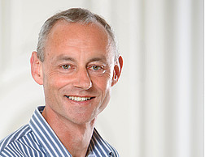

Keynote speakers
Lisa Warbrick (Ngāti Awa, Ngāti Rangitihi, Te Atihaunui a Pāpārangi)—Te Pū Oranga Whenua, NZ
Lisa is Director for the Indigenous Genomics Institute (IGI) and Pou Arataki for Te Pū Oranga Whenua (TPOW), a national collective of Māori Agribusinesses with wāhine leadership. With over 25 years' experience in Māori economic development and Kaupapa Māori, whanau wellbeing is at the heart of Lisa's 25 years management, community and enterprise experience. Lisa's leadership roles with the IGI and TPOW have had her working at the interface between Mātauranga Māori and western eResearch data infrastructure, governance and ethics as New Zealand and the world grapples with what sovereignty of data looks like in practice. She will share her broad, practical experiences with understanding what makes data tika (accurate, fair) not just from government, research and industry perspective, but from a grass-roots Māoridom point of view (te ao Māori).
Joanne Potts—The Analytical Edge, AU
Since 2012, Joanne has run her own statistical consulting firm, The Analytical Edge Pty. Ltd., based in southern Tasmania. During this time, she has worked on a variety of nationally and internationally
funded projects for state and federal government agencies, NGOs, private industry and academic researchers, advising on optimal survey design for data collection and ensuring management actions are guided
by statistically robust analyses and results. The diversity of her role is vast, having worked on projects assessing impacts on endangered species from development and changing fire regimes; through to
mapping and predicting disease spread; assessing risk of component failure in manufacturing, and ensuring women are provided effective pain relief during labour. Joanne is passionate about extending statistical
capabilities for people who wouldn't call themselves statisticians but use statistical methods in their work, and provides training to researchers and industry consultants to ensure they are using best-practice
methods for analysing their data. More recently, Joanne works in fisheries throughout the Pacific, concentrating on describing the impacts of climate change on commercially harvested fish and bycatch species.
Joanne's presentation will cover her lessons learned working as a statistical consultant. She will reflect on running a small business whilst juggling the needs of family
(and herself!) and share some of the highs and lows of working in this area.
Adrian Baddeley—Curtin University, AU.
Adrian Baddeley is a retired professor of statistics whose main research interests are spatial statistics and statistical computing. He is a graduate of the Australian National University and Cambridge University, has worked at Cambridge, Bath, Yale, UWA, CSIRO, CWI Amsterdam, and Curtin University, and held honorary professorships at Leiden and Aarhus. Adrian Baddeley is a winner of the Pitman and Hannan medals for statistical research, holds an honorary Doctorate of Science from Aalborg University, is a John Curtin Distinguished Emeritus Professor at Curtin University, and is a Fellow of the Australian Academy of Science.
Hans-Pieter Piepho—University of Hohenheim, DE.
Hans-Peter Piepho was appointed Professor of Biostatistics at the University of Hohenheim, Stuttgart, Germany in 2001. He has been working as an applied statistician in agricultural research for more than 30 years. His main interests are related to statistical procedures as needed in plant genetics, plant breeding and cultivar testing. Recent interests include envirotype- and marker-enabled breeding, spatial methods for field trials and experimental design for various applications including two-phase experiments and multi-environment trials. Further areas of interest include network meta-analysis and measure of goodness of fit for generalized linear mixed models.
David Warton—University of New South Wales, AU.
David trained to postgraduate level in both statistics and ecology, and his research continues to be at the interface between these disciplines. He has been influential in modernising approaches used in ecology to analyse allometric, multivariate and presence-only data. He advocates a model-based approach where we identify the key properties of data and develop a statistical model to capture these properties, an approach which sometimes necessitates the development of new methodology. He recently wrote a text for ecologists on this theme, published through Springer. David is a Statistics Professor at UNSW Sydney, where he co-founded Stats Central, the university's first statistical consulting unit, which now has nine staff. He also co-founded the Statistical Consulting Network, which has active members across Australia and New Zealand.
David's research has been honoured with awards from the Australian Academy of Science, the American Statistical Association, and the Royal Society of New South Wales. He is currently interested in developing fast tools for large spatial and spatio-temporal datasets, to better understand ecological communities using presence-only data.